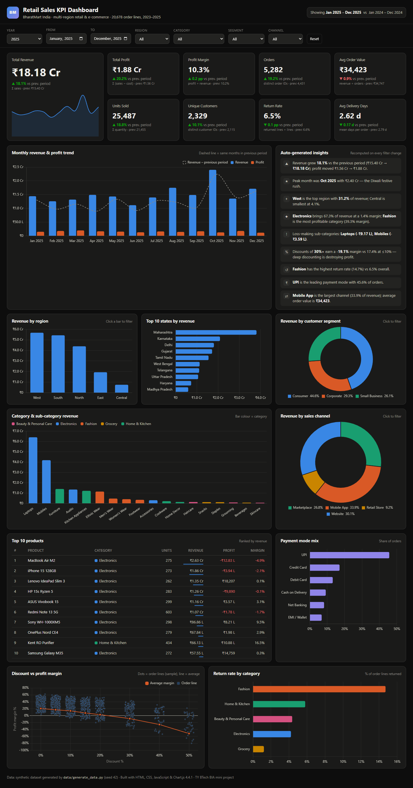
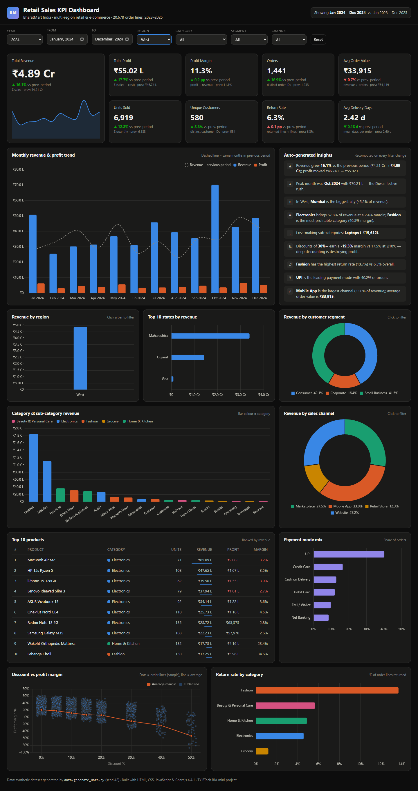
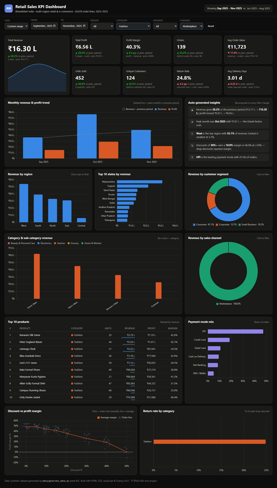
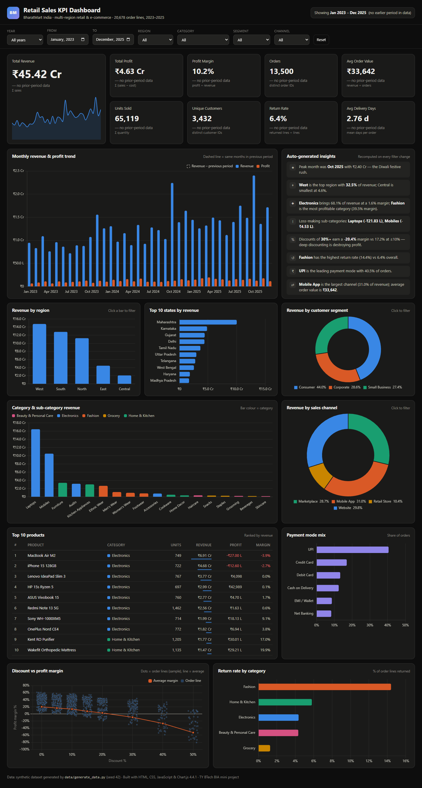

Live dashboard: https://chhelu123.github.io/retail-kpi-dashboard/
Source code: https://github.com/chhelu123/retail-kpi-dashboard
BIA (Business Intelligence & Analytics) mini project, TY BTech.
A retail company that sells across India through a website, a mobile app, online marketplaces and its own stores collects thousands of order records every month. Raw order tables do not tell management how the business is doing. They need answers to questions like these:
This project builds an interactive KPI dashboard, a dynamic website, for a fictional Indian multi-region retailer, BharatMart, covering January 2023 to December 2025. The dashboard turns about 20,000 order lines into 9 KPI cards, 10 charts, a top-products table and auto-written insights. Every number updates live when the user changes the global filters (date range / year, region, category, segment, channel). The whole site is static (HTML + CSS + JavaScript), so it needs no backend and is hosted free on GitHub Pages.
The dataset is synthetic. It was generated by
data/generate_data.py(Python, NumPy, pandas, random seed 42). Popular public retail datasets such as the "Sample Superstore" are US-based (US states, US$, US holidays). This project needed Indian geography, ₹ prices and Indian festive seasonality, so a realistic generator was written instead. Re-running the script always produces the same data.
Size: 20,678 order lines · 13,500 orders · 3,432 customers · 26 cities in 20 states and 5 regions · 72 products in 5 categories / 18 sub-categories · 36 months.
Realism built into the generator
| Pattern | How it is modelled |
|---|---|
| Growth trend | Order volume grows about 20% a year, and prices inflate about 5% a year |
| Diwali spike | Demand rises up to 2.6x in the 3 weeks before the real Diwali date of each year (12 Nov 2023, 1 Nov 2024, 20 Oct 2025) |
| Other sales | Republic Day (Jan), Independence Day (Aug), year-end sale (Dec), FY-end corporate buying (Mar); monsoon dip (Jun–Jul) |
| Discounts | Deeper discounts in festive windows; Fashion and Beauty discount more; heavy discounts lead to losses |
| Payments | UPI share rises and Cash on Delivery falls over the 3 years |
| Logistics | Delivery days depend on region (East/Central slower) and improve over time |
| Returns | Higher for Fashion and the Marketplace channel, lower for Grocery and Retail Store |
| Customers | Each customer has a home city and segment; a Pareto distribution creates repeat buyers |
Columns (data/orders.csv, one row per order line)
| Column | Type | Description |
|---|---|---|
| order_date | date | Date of the order (2023-01-01 to 2025-12-31) |
| order_id | text | Order number, e.g. BM-2025-012345 (an order can have 1–3 lines) |
| region | text | North, South, East, West, Central |
| state | text | Indian state, e.g. Maharashtra, Karnataka |
| city | text | City, e.g. Mumbai, Bengaluru |
| segment | text | Consumer, Corporate, Small Business |
| category | text | Electronics, Fashion, Home & Kitchen, Grocery, Beauty & Personal Care |
| sub_category | text | 18 sub-categories, e.g. Mobiles, Laptops, Ethnic Wear |
| product | text | Product name, e.g. Redmi Note 13 5G |
| quantity | int | Units in the line |
| unit_price | ₹ | List price per unit |
| discount | 0–0.5 | Discount fraction (0, 5, 10, 15, 20, 30, 40, 50%) |
| sales | ₹ | Revenue = quantity × unit_price × (1 − discount) |
| cost | ₹ | Cost of goods sold for the line |
| profit | ₹ | sales − cost (can be negative) |
| customer_id | text | Customer, e.g. CUST-00042 |
| channel | text | Website, Mobile App, Marketplace, Retail Store |
| payment_mode | text | UPI, Credit Card, Debit Card, Net Banking, Cash on Delivery, EMI / Wallet |
| delivery_days | int | Days from order to delivery (order level) |
| returned | 0/1 | 1 if the line was returned |
For the website, the same data is also saved as data/orders.json (1.4 MB). In this
compact form, every text column is stored once in a lookup list and each row
keeps only small integer codes. That is about 2.6x smaller than the CSV.
Every KPI is computed on the rows that match the current filters. Each card also compares the value with the previous period: a window of the same length immediately before the selected one. For example, 2025 is compared with 2024, and Sep–Nov 2025 with Jun–Aug 2025. The card shows ▲ or ▼, coloured green if the change is good and red if it is bad. For Return Rate and Delivery Days, lower is better.
| KPI | Formula |
|---|---|
| Total Revenue | Σ sales |
| Total Profit | Σ (sales − cost) |
| Profit Margin % | Total Profit ÷ Total Revenue × 100 |
| Orders | count of distinct order_id |
| Average Order Value (AOV) | Total Revenue ÷ Orders |
| Units Sold | Σ quantity |
| Unique Customers | count of distinct customer_id |
| Return Rate % | returned lines ÷ total lines × 100 |
| Avg Delivery Days | mean of delivery_days over distinct orders |
| Change vs previous period | (current − previous) ÷ previous × 100; for % KPIs, the difference in percentage points (pp) |
All money is shown in the Indian system: ₹18.18 Cr, ₹4.89 L, ₹34,423, and
counts use lakh grouping (12,34,567).
index.html?year=2024®ion=West or
index.html?from=2025-09&to=2025-11&category=Fashion&channel=Marketplace.
Opening such a link restores the same view.| Layer | Tool |
|---|---|
| Data generation | Python 3, NumPy, pandas (data/generate_data.py) |
| Data format | CSV (full data) + compact JSON (loaded by the page) |
| Front end | HTML5, CSS3 (grid / flexbox, media queries), vanilla JavaScript (ES2020) |
| Charts | Chart.js 4.4.1 from the cdnjs CDN |
| Hosting | GitHub Pages (static, no server code) |
| Report / screenshots | Headless Google Chrome (Playwright for the filtered screenshots) |
Project structure
retail-kpi-dashboard/
├── index.html dashboard page
├── css/style.css theme and responsive layout
├── js/format.js ₹ lakh/crore number formatting
├── js/dashboard.js data loading, filters, KPIs, charts, insights
├── data/generate_data.py synthetic data generator
├── data/orders.csv generated dataset (20,678 rows)
├── data/orders.json compact copy used by the website
├── screenshots/ output screenshots
├── report/ report.html + build script
└── REPORT.pdf printable project report
# 1. (optional) regenerate the data
py data/generate_data.py
# 2. serve the folder (the page loads data/orders.json with fetch, so file:// will not work)
py -m http.server 8000
# 3. open http://localhost:8000 in a browser
Or open the live version: https://chhelu123.github.io/retail-kpi-dashboard/
js/dashboard.js)async function loadData() {
const res = await fetch("data/orders.json");
const j = await res.json();
const ci = Object.fromEntries(j.cols.map((c, i) => [c, i])); // column name -> index
const start = new Date(j.meta.start + "T00:00:00Z");
state.rows = j.rows.map(r => {
const d = new Date(start.getTime() + r[ci.day] * 864e5);
const o = { mi: (d.getUTCFullYear() - 2023) * 12 + d.getUTCMonth(), // month index 0..35
order: r[ci.order], customer: r[ci.customer] };
for (const k of ["region", "state", "city", "segment", "category",
"sub_category", "product", "channel", "payment_mode"])
o[k] = j.dims[k][r[ci[k]]]; // decode lookup code -> text
o.qty = r[ci.quantity]; o.sales = r[ci.sales]; o.profit = r[ci.profit]; /* ... */
return o;
});
}
The JSON file is fetched once. Each compact row (an array of numbers) is decoded
into a normal object. Text values are looked up in the dims lists, and the date
is turned into a month index (Jan 2023 = 0 … Dec 2025 = 35). Comparing whole
numbers makes date-range filtering and monthly grouping very fast.
function readFilters() {
let from = ymToMi($("fFrom").value), to = ymToMi($("fTo").value);
const f = { from, to };
for (const [dim, id] of Object.entries(FILTER_DIMS)) f[dim] = $(id).value;
const len = to - from + 1; // previous period = same length, just before
f.prevFrom = from - len; f.prevTo = from - 1;
return f;
}
function filterRows(f, from, to) {
return state.rows.filter(r =>
r.mi >= from && r.mi <= to &&
(f.region === "All" || r.region === f.region) &&
(f.category === "All" || r.category === f.category) &&
(f.segment === "All" || r.segment === f.segment) &&
(f.channel === "All" || r.channel === f.channel));
}
Every filter control has a change listener that calls render(). render()
calls filterRows twice: once for the selected window and once for the
previous window, with the same dimension filters. The previous-period rows feed
the ▲/▼ comparisons and the dashed line on the trend chart.
function computeKPIs(rows) {
let revenue = 0, profit = 0, units = 0, returned = 0;
const orders = new Map(), customers = new Set();
for (const r of rows) {
revenue += r.sales; profit += r.profit; units += r.qty; returned += r.returned;
orders.set(r.order, r.days); // delivery days are stored per order
customers.add(r.customer);
}
let dsum = 0; for (const d of orders.values()) dsum += d;
const n = orders.size;
return { revenue, profit, units, orders: n, customers: customers.size,
margin: profit / revenue, aov: revenue / n,
returnRate: returned / rows.length, delivery: dsum / n };
}
One pass over the rows computes all nine KPIs. A Set counts distinct customers.
A Map counts distinct orders and keeps one delivery value per order, so an
order with 3 lines is not counted 3 times in Avg Delivery Days.
function renderRegion(rows) {
const g = groupBy(rows, "region").sort((a, b) => b.sales - a.sales);
upsert("cRegion", {
type: "bar",
data: { labels: g.map(x => x.key),
datasets: [{ label: "Revenue", data: g.map(x => x.sales),
backgroundColor: SERIES[0], borderRadius: 4 }] },
options: {
plugins: { tooltip: { callbacks: { label: c => {
const x = g[c.dataIndex];
return [` Revenue: ${inr(x.sales)}`, ` Profit: ${inr(x.profit)} (${pct(x.profit / x.sales)})`];
} } } },
scales: { y: { ticks: { callback: v => inrAxis(v) } } },
onClick: (e, els) => els.length && setFilter("region", g[els[0].index].key),
},
});
}
groupBy adds up sales and profit for each region. upsert creates the chart the
first time; on later calls it only swaps the data, so Chart.js animates the bars
to their new heights. The y-axis and tooltip use the inr() helper below.
onClick turns the chart into a filter.
js/format.js)function inr(v, digits = 2) {
const a = Math.abs(v), s = v < 0 ? "-" : "";
if (a >= 1e7) return `${s}₹${(a / 1e7).toFixed(digits)} Cr`; // crore
if (a >= 1e5) return `${s}₹${(a / 1e5).toFixed(digits)} L`; // lakh
return `${s}₹${Math.round(a).toLocaleString("en-IN")}`; // 34,423
}
const lo = rows.filter(r => r.discount <= 0.10), hi = rows.filter(r => r.discount >= 0.30);
const m = a => a.reduce((s, r) => s + r.profit, 0) / a.reduce((s, r) => s + r.sales, 0);
add("%", `Discounts of <b>30%+</b> earn a <b>${pct(m(hi))}</b> margin vs ${pct(m(lo))} at ≤10%`);
Each insight is a small rule run on the filtered rows, such as the top group, a ratio or a comparison. The sentence is rebuilt from the results every time the filters change.
index.html (defaults to the latest year, ?year=2025)

index.html?year=2024®ion=West. Revenue drops from ₹18.18 Cr (all India, 2025)
to ₹4.89 Cr. All KPIs, charts and insights now describe the West region only,
compared with West 2023.

index.html?from=2025-09&to=2025-11&category=Fashion&channel=Marketplace. This
view uses a custom date range: Sep–Nov 2025 is compared with Jun–Aug 2025.
Revenue ₹16.30 L (▲28.2%), margin 40.3%, but the return rate jumps to 24.8%
(▲4.2 pp, shown in red because it is bad).

index.html?year=all. Total revenue ₹45.42 Cr. There is no earlier period in the
data, so the cards show "no prior-period data".

Across the full 2023–2025 data:
Recommendations: cap discounts at about 20% outside planned sale events, review laptop and mobile pricing and supplier costs, push high-margin Fashion and Home & Kitchen during Diwali, fix size and fit issues to cut Fashion returns, and improve logistics in the East and Central regions.
The project shows the complete BI flow: data → KPIs → visual dashboard → insight → decision. A realistic Indian retail dataset was generated, the important business KPIs were defined with clear formulas, and they are presented in an interactive, filterable web dashboard. The dashboard also explains itself through auto-generated insights. Because the site is fully static, it is easy to host (GitHub Pages) and easy to extend. Possible next steps are connecting it to a live database or Google Sheet, adding an India choropleth map, adding sales forecasting (for example, a moving average or Prophet), and adding customer cohort / RFM analysis.